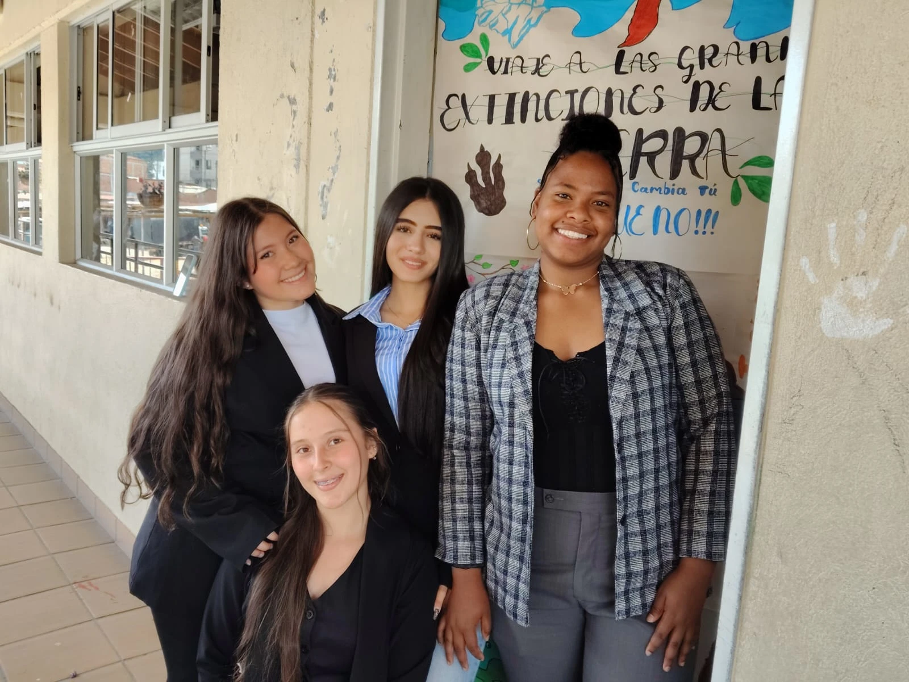
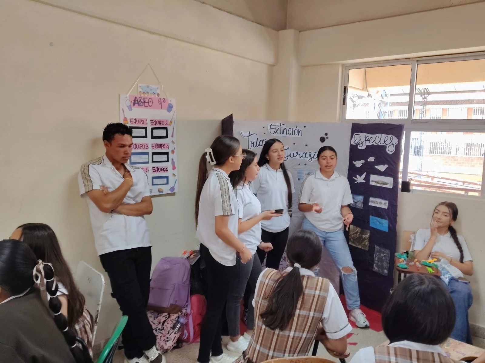
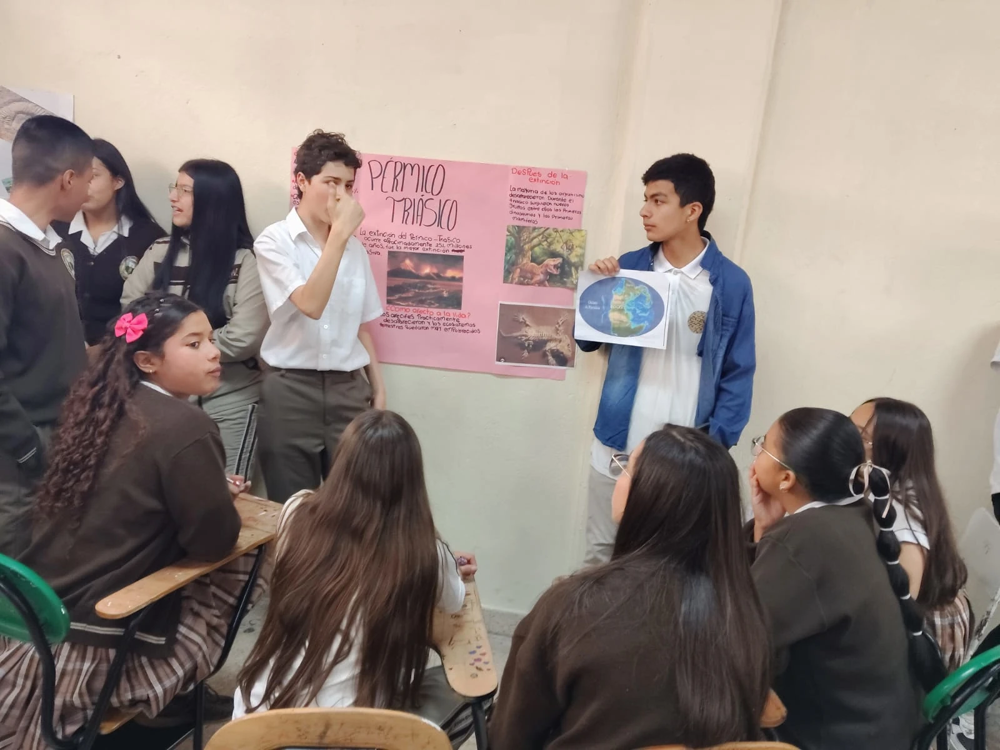
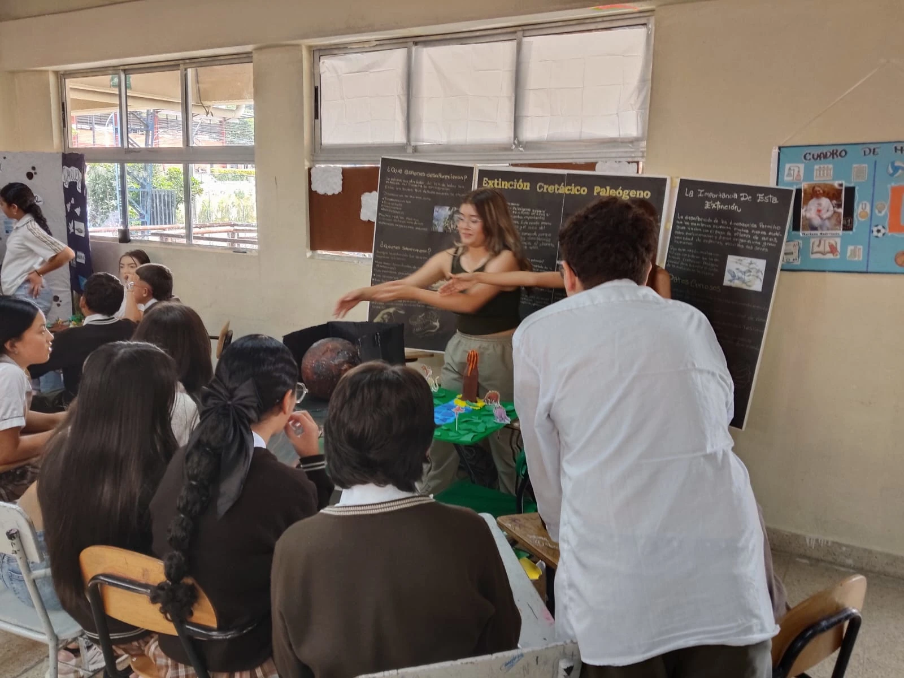
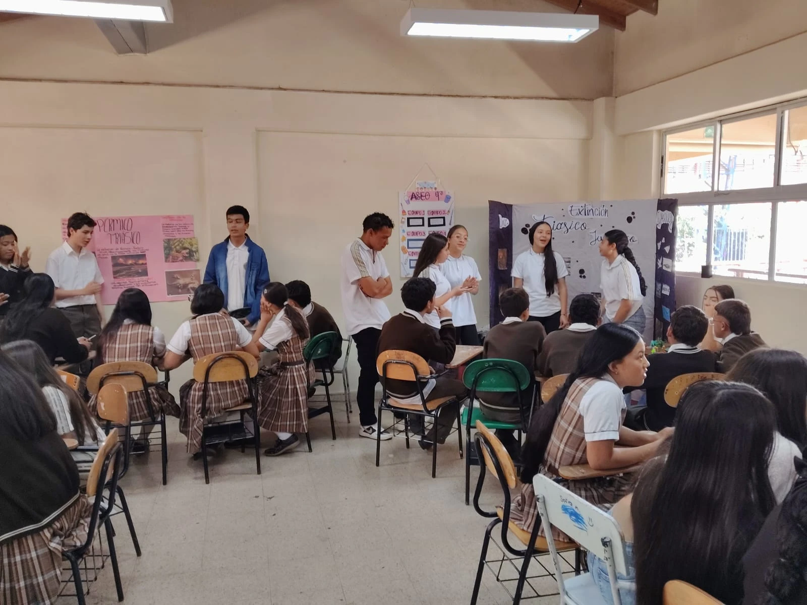

Grado 9° · Aprendizaje Basado en Proyectos
Las Big Five · Las Cinco Grandes





Cinco cataclismos que redefinieron la vida sobre la Tierra. Cinco momentos en que la evolución fue puesta a prueba, y algunos la superaron.
▼ Explora ▼
Las cinco grandes extinciones masivas
En los últimos 500 millones de años, la vida en la Tierra ha enfrentado cinco grandes catástrofes de extinción masiva. Cada una eliminó más del 60% de las especies, y cada una abrió la puerta a nuevas formas de vida.
Una glaciación masiva enfrió los mares y bajó drásticamente el nivel del mar. Las aguas poco profundas, hogar de la mayoría de vida marina, desaparecieron. Se considera la segunda mayor extinción de la historia.
de todas las especies marinas desaparecieron
Una extinción prolongada y en varios pulsos. El enfriamiento del clima y la reducción del oxígeno disuelto en los mares devastaron la vida marina. Las nuevas plantas terrestres grandes también podrían haber contribuido al cambio climático.
de las especies desaparecieron
La extinción más devastadora de la historia terrestre. El vulcanismo masivo en Siberia liberó CO₂, metano y azufre durante miles de años. Los océanos se acidificaron, el clima se calentó extremadamente y el oxígeno atmosphérico colapsó.
la peor extinción de todos los tiempos
El fracturamiento del supercontinente Pangea desencadenó erupciones volcánicas masivas en el Atlántico central. El CO₂ liberado provocó calentamiento global, acidificación oceánica y lluvia ácida. Abrió el camino para el dominio de los dinosaurios.
de las especies marinas y terrestres
Un asteroide de 10–15 km de diámetro impactó en Chicxulub, México. La explosión fue miles de veces más poderosa que todas las bombas nucleares del mundo. El polvo bloqueó el sol durante meses, colapsando la cadena alimenticia global.
incluyendo todos los dinosaurios no aviares
Formulario de visita
Califica la exposición del grupo que visitaste. Tu opinión ayuda a mejorar el aprendizaje.
1. ¿La exposición fue clara y fácil de entender?
2. ¿El grupo demostró conocimiento sobre selección natural, evolución y extinción?
3. ¿La creatividad y organización del espacio ayudaron a comprender el tema?
4. ¿Los integrantes del grupo participaron y explicaron adecuadamente?
5. Después de visitar el museo, ¿aprendiste algo nuevo o importante?
6. ¿Qué fue lo que más te llamó la atención del museo?
Gracias por tu opinión. Tu retroalimentación es muy valiosa para los estudiantes de Grado 9°.